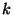
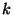

The variance and its squareroot the standard deviation are the fundamental measures
of variation for a continuous data set. These measures can either be computed for a
population or for a sample. The sample standard deviation is denoted  while the
population standard deviation is denoted
while the
population standard deviation is denoted  .
.  and
and  respectively are the
sample variance and population variance. For a given set of data
respectively are the
sample variance and population variance. For a given set of data  should be
considered as an estimate for the corresponding
should be
considered as an estimate for the corresponding  .
.
The sample standard deviation  is defined by the following formula:
is defined by the following formula:
In the formula,
are the sample data and
 is the sample mean. The
standard deviation is a type of average of squared deviations from the mean and therefore measures
dispersion about the mean.
is the sample mean. The
standard deviation is a type of average of squared deviations from the mean and therefore measures
dispersion about the mean.
If
are all the measurements in a population and  is the population
mean then the population standard deviation
is the population
mean then the population standard deviation  is
is

Why we divide by  rather than
rather than  can be explained as follows. Generally
can be explained as follows. Generally  is used to
estimate
is used to
estimate  just as
just as
 is used to estimate the population mean
is used to estimate the population mean  . The fact
that
. The fact
that  is used to estimate
is used to estimate  is the reason why we divide by
is the reason why we divide by  rather than
rather than  in the
formula. Technically this is to make the sample variance
in the
formula. Technically this is to make the sample variance  an unbiased estimator for the
population variance, that is so that
an unbiased estimator for the
population variance, that is so that  will average out over all possible samples to the
population variance. Non-technically the reason why we divide by
will average out over all possible samples to the
population variance. Non-technically the reason why we divide by  can be explained in the
following manner. If the data
can be explained in the
following manner. If the data
 consisted of the whole population we would divide by
consisted of the whole population we would divide by
 . Generally, however,there will be more variation in a whole population
than in a sample. If we divide by
. Generally, however,there will be more variation in a whole population
than in a sample. If we divide by  with sample data we will generally underestimate the
population variation. Dividing by
with sample data we will generally underestimate the
population variation. Dividing by  makes the estimate larger, and in fact just large enough
so that it will average out to the population variation.
makes the estimate larger, and in fact just large enough
so that it will average out to the population variation.
The standard deviation measures how closely a set of data clusters about its mean. However it can be used to give even more information. Using the standard deviation we can actually predict what percentages of the total data or population will fall into prescribed intervals about the mean.
There are two results which allow us to do this type of percentage prediction. The first of these is known as Chebyshev's Rule or Chebyshev's Theorem after the Russain mathematician P.Chebyshev who first discovered it. It is a mathematical theorem and therefore is true for any set of data and for any population. The rule is as follows:
CHEBYSHEV'S RULE:
If then at least
 of the total data fall within  standard deviations
of the mean.
of the total data fall within  standard deviations
of the mean.
In the above statement, is a number and the rule leads to a fraction
 . This
fraction indicates a guaranteed fraction of the data which will be found within the interval given
by the mean minus standard deviations to the mean plus standard deviations. Chebyshev's
Theorem is true for both samples and populations. For the corresponding fraction is
and hence within two standard deviations of the mean there are always at least
of all the data. For
. This
fraction indicates a guaranteed fraction of the data which will be found within the interval given
by the mean minus standard deviations to the mean plus standard deviations. Chebyshev's
Theorem is true for both samples and populations. For the corresponding fraction is
and hence within two standard deviations of the mean there are always at least
of all the data. For  the corresponding fraction is
and hence
within three standard deviations of the mean there are always at least
of all the
data. We picture this below.
the corresponding fraction is
and hence
within three standard deviations of the mean there are always at least
of all the
data. We picture this below.
EXAMPLE
Suppose a medical study has an average weight of  grams with a
process standard deviation of 1.6 grams for certain tissue samples. If then two standard
deviations would be
grams with a
process standard deviation of 1.6 grams for certain tissue samples. If then two standard
deviations would be
 grams. Therefore a two standard deviation interval about the
mean would be
grams. Therefore a two standard deviation interval about the
mean would be
 grams or equivalently grams to grams. Using Chebyshev's
rule with it would then be predicted that at least
of all the tissue samples would fall within
this interval. Therefore at least 75% of the tissue samples would be between grams and
grams. Similarly if
grams or equivalently grams to grams. Using Chebyshev's
rule with it would then be predicted that at least
of all the tissue samples would fall within
this interval. Therefore at least 75% of the tissue samples would be between grams and
grams. Similarly if  then three standard deviations would be
grams. The corresponding three standard deviation interval about the mean would then be
grams to
then three standard deviations would be
grams. The corresponding three standard deviation interval about the mean would then be
grams to  grams. The corresponding fraction from Chebyshev's rule is
. Therefore
or 89% of the tissue samples would weigh in the interval
grams to
grams. The corresponding fraction from Chebyshev's rule is
. Therefore
or 89% of the tissue samples would weigh in the interval
grams to  grams. This is pictured graphically below
grams. This is pictured graphically below
Usually, Chebyshev's rule underpredicts the percentage within a given interval. That is the actual percentage is higher than what is predicted by the rule. For example by Chebyshev's rule we would predict that at least 75% of all the data fall within a two standard deviation interval about the mean. In practice, however, for most cases there will be closer to 96% in a two standard deviation interval. Looking at the data below which again comes from the collection of pediatric weights this underprediction shows up very clearly.
EXAMPLE
For the data on pediatric weights given in Example 2.2.1 the mean was computed to be
 while the sample standard deviation was
while the sample standard deviation was  . The table below lists
various intervals about the mean in terms of the sample standard deviation and then a comparison
of what would be predicted by Chebyshev's rule (which must be true) together with the actual
observed percentage.
. The table below lists
various intervals about the mean in terms of the sample standard deviation and then a comparison
of what would be predicted by Chebyshev's rule (which must be true) together with the actual
observed percentage.
Interval Chebyshev
2 115.6-186.8 at least 75% 98%
3 97.7-204.6 at least 89% 100%
4 79.9-222.4 at least 94% 100%
A more accurate percentage prediction can be obtained from what is known as the Empirical Rule. This is a rule which has been observed experimentally and is based theoretically on the normal distribution which will be discussed fully in Chapter Four. The drawback to using this rule is that it can only be applied with confidence if there is a "large" number of measurements and these measurements are "fairly" symmetrical. What is meant by "large" is that the predictions based on the empirical rule become more accurate as the number of measurements increases. Thus our confidence in predictions made using the empirical rule increases with the number of observed measurements. The empirical rule is as follows:
 EMPIRICAL RULE:
EMPIRICAL RULE:
In a "large" set of fairly symmetrical measurements approximately 68% fall within one standard deviation of the mean, 96% fall within two standard deviations of the mean and over 99% fall within three.
If the data is completely symmetrical we obtain a finer percentage breakdown as pictured below:

EXAMPLE
In the previous example there was a tissue sample average weight of  grams with a standard deviation of grams. A predicted statistical breakdown of tissue
sample weights based on the empirical rule would be given as below.
grams with a standard deviation of grams. A predicted statistical breakdown of tissue
sample weights based on the empirical rule would be given as below.
That is 34% of all the tissue sample should weigh between  grams and
grams and  grams, 14%
between
grams, 14%
between  grams and grams and so on. In using the empirical rule in this case we
would have to assume that tissue sample weight is symmetrical. This is usually the case with most
biological data.
grams and grams and so on. In using the empirical rule in this case we
would have to assume that tissue sample weight is symmetrical. This is usually the case with most
biological data.
From the empirical rule we have that 96% of a set of measurements fall within two standard
deviations of the mean while 99% will fall within three. Therefore in the first case 96% of the
data will fall within a range of four standard deviations (two on either side of the mean) while
in the second 99% will fall within a range of six standard deviations (three on either side of the
mean). It follows that for most large sets of data the range  of this data will be between
and times the magnitude of the standard deviation. This relationship can be used to give a
rough estimate of the standard deviation.
of this data will be between
and times the magnitude of the standard deviation. This relationship can be used to give a
rough estimate of the standard deviation.  would be estimated as being between
would be estimated as being between
 and
and
 where
where  is the range.
is the range.

EXAMPLE
A sample of ball bearings had a range of cm in measuring the diameter. Estimate the standard deviation.
From the discussion above  would be estimated to be between
and
would be estimated to be between
and
 .
.